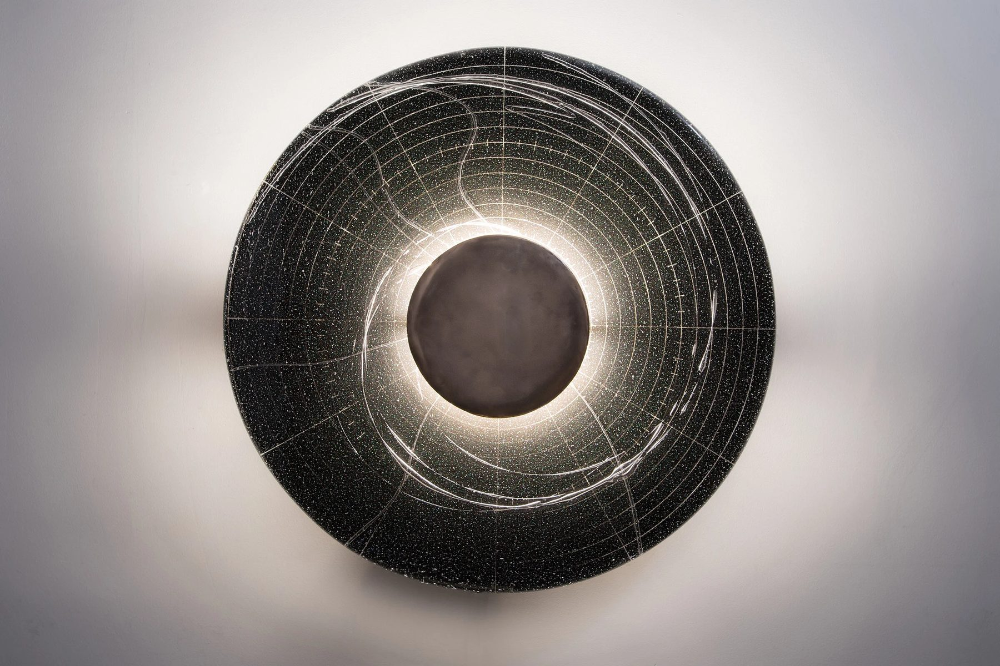
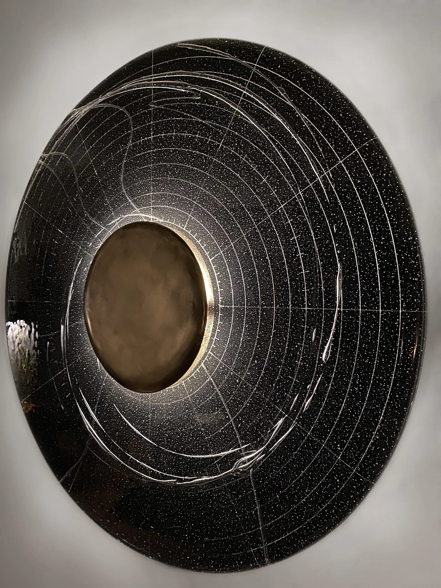
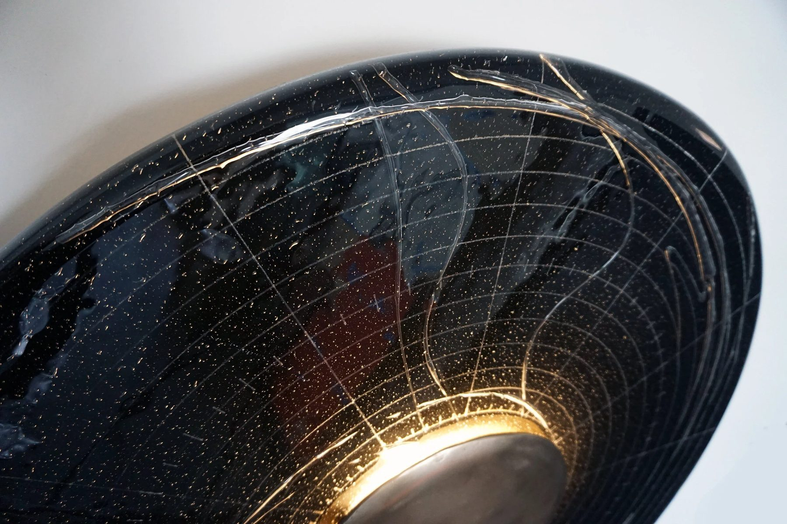
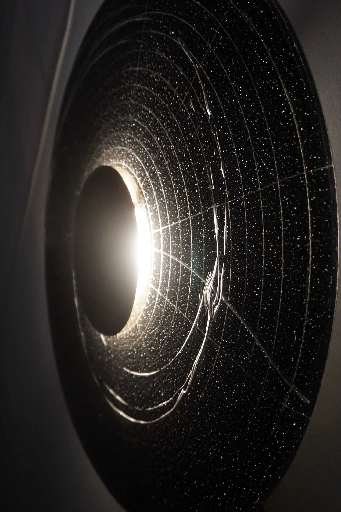
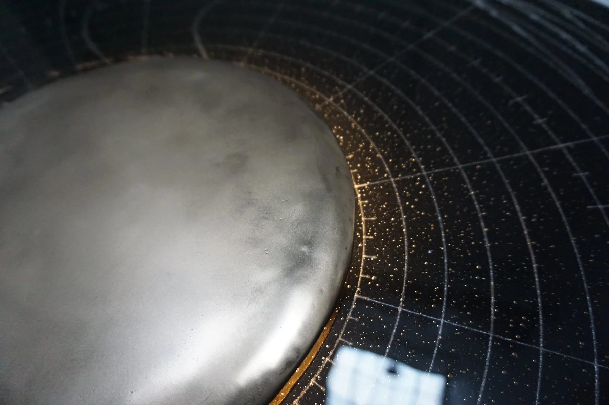

Lighting / 2019 / Chicago, IL
Annular Sconce
Fused glass and hammered bronze

A thirty inch diameter sconce in fused glass and hammered bronze.
The work
Annular maps the full calendar year of 2019 as the planets of our solar system travel through it. An underlying grid reads as the calendar, and lines of air trace the planets' paths. It is rational and specific, and from a step back it is simply calming: a subtle glow, a slow circular motion, a place to sit.
The material question
A year of planetary motion had to read as a map, and as a sky.
The making
In fused glass, the lines we drew to trap air sit among bubbles already in the glass, a starfield the planetary paths are in dialogue with. The hammered bronze is the sun. It blocks the light source, and the light that escapes around it makes a corona across the field.
In place
In the studio's collection, a one-off and the first of a series. The map dictates the period, so the series stays open: other years, and smaller periods at smaller scales.
Details
- Year
2019 - Location
Chicago, IL - Category
Lighting - Materials
Fused glass, hammered bronze
Credits
- Glass: Ally Reza
Studio
- ChiLab Studio
- Chicago, Illinois
- Established 2013




Bring us a drawing,
a model, or a hunch.
The studio
Specialty material projects for architecture, interior design, public art, and the fine arts.
ChiLab Studio, Chicago, Illinois. Established 2013.
What we do
- Metal casting
- Glass
- Finishes
- Digital fabrication
- Metal fabrication
- Restoration
- Project management
Contact
info@chilabstudio.com
chilabstudio.com
Instagram @chilabstudio